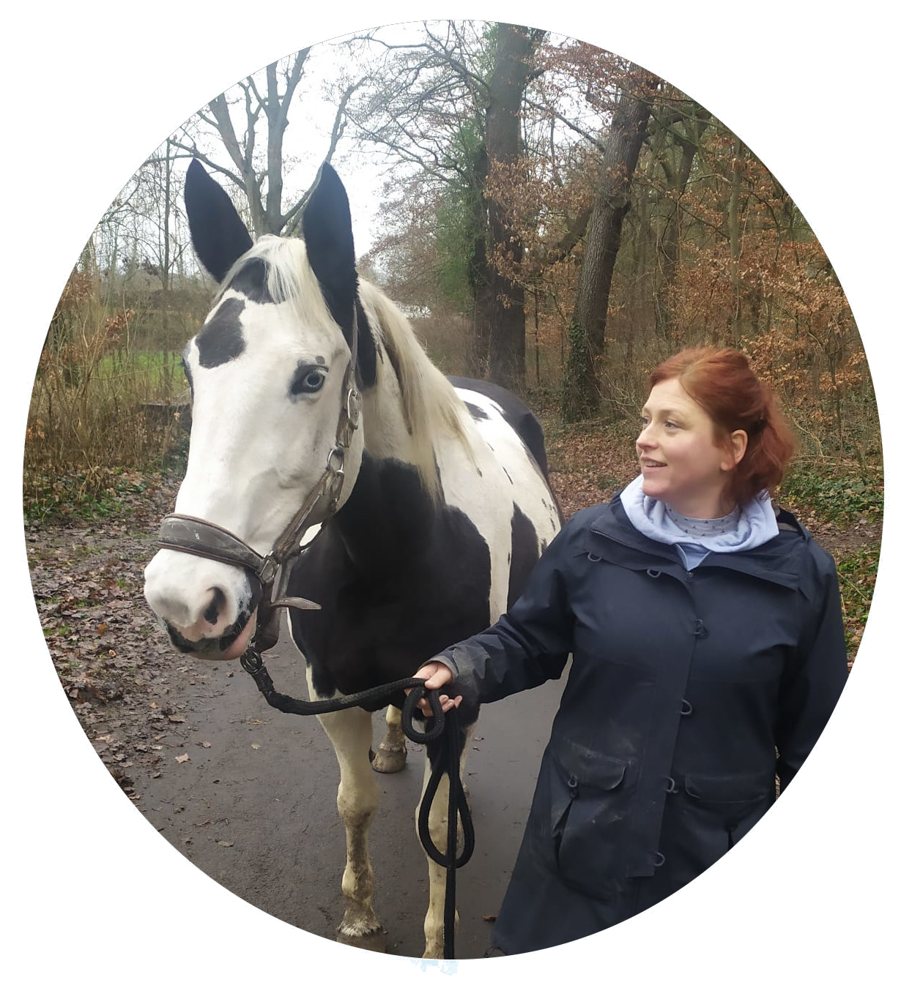

### Abschlussarbeit im TGD Zertifikatskurs 22/23 -Katharina Kulig-
<span style="color: red">Tiergestützte Interaktion</span>sanbahnung & Diagnostik mit Hilfe von Achatschnecken <span style="color: green">als heilpädagogisches Angebot</span> in einem Medizinischen Zentrum für Menschen mit komplexen Behinderungen (MZEB)?! Eine theoretische Ausarbeitung und Projektskizze
##### TGD in Gießen <font size="5"> <table> <td><ul> <li>Ich will mich mit dem Thema -Tierwohl- auseinandersetzen, vor allem in Bezug auf den Einsatz von Tieren in der Pädagogik, als Basis der Zusammenarbeit mit meinen Tieren (Was kann ich erwarten? / Was ist zu viel?/ Wie mache ich die Grenzen meines Tieres auch meinem Gegenüber sichtbar?,...). </li> <br> <li>Ich will herausfinden, ob und wie tiergestützte Angebote auch in einer medizinischen Ambulanz und im klinisch - stationären Setting dauerhaft einen Platz finden können </li> </ul></td> <td>  </td> </table> </font>
##### Ziele meiner Arbeit <font size="5"> - Klärung einer TGD in medizinischen Institutionen, auch in Bezug auf Tierwohl und Adressaten. - Meine Tierauswahl „Achatschnecke“ begründen und eine entsprechende Sachkunde, auch im Kontext des vorgesehenen Einsatzbereiches erarbeiten. - Das erlernte Wissen über den professionellen Einsatz von Tieren/Achatschnecken mit meinem Berufsverständ und meinem heilpädagogischen Fachwissen vernetzen und ein theoriegeleitetes, tiergestütztes, heilpädagogisches Praxis - Angebot entwickeln. - Konzeptionell notwendige, rechtliche, finanzielle, organisatorische, hygienische Voraussetzungen passend zum Kontext erarbeiten. </font>
##### Tiere in medizinischen Einrichtungen Biophilie Hypothese <font size="5"> - Kognitive, physische und emotionale Hinwendung zum Leben! - Instinktives Erfassen des Menschen, dass er/sie mit der Natur und den Tieren verbunden ist, - als komplexes inneres Regelwerk, geistige Fähigkeiten aber auch Ästhetik und spirituelle Entwicklung betreffend (Wilson/Kellert) Stärkster Effekt: Tiere sind „Soziale Katalysatoren“ (Olbrich) </font>
##### Tiere in medizinischen Einrichtungen <font size="2">Quelle: https://www.life.com/animals/animals-make-a-hospital-happy-classic-photos-of-critters-helping-kids/ </font>
##### Tiere in medizinischen Einrichtungen Ist das möglich? <font size="5"> - Auswahl einer passenden Tierart im Kontext mit dem Einsatzort - Sicherstellung des Tierwohls und die Sicherung artgerechter Haltungsbedingungen, bzw. von Rückzugsmöglichkeiten - Eignung der Anbieterin/der Verantwortlichen - Voraussetzungen beim Adressaten - Voraussetzungen bei Kolleg*innen und Träger - Hygiene - Räumlichkeiten und Ausstattung - Risikobewertung </font>
##### Tiere in medizinischen Einrichtungen Ist das nötig? <font size="5"> - Mehrwert für ein Tier im Einsatz ist nicht leicht zu rechtfertigen (beste Haltungsbedingungen, Zuwendung, Tier – Mensch – Begegnung?!, Aufgabe, durch positive Kontakte und Bewertung mehr Respekt den Tieren gegenüber) - Für den Menschen ist das Tier ein „sozialer Katalysator“, sein/ihr Interesse und ihre Hinwendung zur Natur nutzend aus einer angstbesetzten, stressigen Situation eine erfüllende Begegnung machen - Institutionen profitieren von zufriedenen Patient*innen/Klient*innen </font>
##### Tiere in medizinischen Einrichtungen Die Wahl des rihtigen Tieres. <img src="https://upload.wikimedia.org/wikipedia/commons/5/5f/Achatina_achatina.jpg" width="40%" height="auto"> <!-- --> <font size="2">Quelle: https://www.achatschnecken-team.de/anatomie, Wikipedia </font>
##### Achatschnecken in der TGD Ein symbolstarkes „Krafttier“ <font size="5"> ###### Assoziationen - Langsamkeit + Entschleunigung + Ruhe - Schönheit - Fremdartigkeit - Schleimigkeit - Zurückgezogenheit + Verletzlichkeit - Stärke + Sicherheit: - Achtsamkeit </font>
##### Achatschnecken in der TGD Einsatzmöglichkeiten <font size="5"> - Die TVT (131) empfiehlt bei nicht domestizierten, exotischen Tieren, dass sie vorwiegend passiv eingesetzt werden sollen – größtmögliche Freiwilligkeit anstreben! Passiver Einsatz und Einsatz ohne Tier: - Tierbeobachtung, einer Schnecke lauschen, über die Tierbeobachtung ins Gespräch kommen, Diskussionsfragen (niedere Tiere?), Schnecken bastel, malen, töpfern, Gesellschaftsspiele (Memory, Tempo kleine Schnecke), … Aktiver Einsatz: - Füttern und Terrarienpflege, Herausnahme und von nahem beobachten, auf die Hand klettern lassen, ein Schneckenrennen beobachten, Leseförderung, … </font>
##### Achatschnecken im MZEB <font size="5"> Ambulante, interdisziplinäre medizinische Versorgungszentren für Menschen mit komplexer Mehrfachbehinderung - nach §119c SGB V - und §43b „Versicherte Erwachsene mit geistiger Behinderung oder schweren Mehrfachbehinderungen haben auch Anspruch auf nichtärztliche Leistungen, insbesondere auf psychologische, therapeutische und psychosoziale Leistungen, wenn sie unter ärztlicher Verantwortung durch ein medizinisches Behandlungszentrum nach § 119c erbracht werden und erforderlich sind, um eine Krankheit frühestmöglich zu erkennen und einen Behandlungsplan aufzustellen“. - Ärztliche, psychologische, heilpädagogische, ergotherapeutische, logopädische, physiotherapeutische Diagnostik und Behandlungsplanung, mit viel Zeit und der Bereitschaft individuell vorzugehen </font>
##### TGD Achatschnecken im MZEB <font size="5"> Adressaten - Personen, die langfristige körperliche, seelische, geistige oder Sinnesbeeinträchtigungen haben, die sie in Wechselwirkung mit verschiedenen Barrieren an der vollen, wirksamen und gleichberechtigten Teilhabe an der Gesellschaft hindern können (BAG MZEB 2022, S.3f; siehe auch Art.1 Satz 2 UN-BRK). - Klient*inne im MZEB verfügen nicht immer über Lautsprache oder deren Lautsprachemöglichkeiten sind eingeschränkt - Eingeschränktes Lautsprache-Wort-Symbolverständnis/Kommunikation individuell - Adressaten einer TGD sind auch die Begleitpersonen der Klient*innen </font>
##### TGD Achatschnecken im MZEB als heilpädagogisches Angebot <font size="5"> - Praktische Heilpädagogik versteht sich als „Brücke“ welche „Heilpädagogisches Fachwissen“, „wertende Stellungnahmen“ und „Motive“ mit „Interaktionsbeziehungen“ zwischen mindestens zwei Personen verbindet (Greving 2020). - Kernelement jeder Heilpädagogik ist die Diagnostik! Und die darauf basierende Entwicklung von Annahmen und Zielen sowie die Beziehungsgestaltung mit den Adressaten </font>
##### TGD Achatschnecken im MZEB als heilpädagogisches Angebot <font size="5"> Kernelement der TGD ist die Gestaltung der „triadischen Beziehung“ zwischen Anbieter, Tier und Adressat als eine immaterielle, Adressat*innen und zielorientierte Interaktionsarbeit (Ameli 2016) Schnittstelle zur Heilpädagogik!! </font>
##### Tiergestützte Heilpädagogische Diagnostik und Interaktionsanbahnung mit Hilfe von Achatschnecken im MZEB Ziele <font size="5"> - Interaktionsanbahnung, sprachliche/kommunikative Einschätzungen ermöglichen, - Stimmung im Tierkontakt entspannen, Angst vor Untersuchungen lösen, - Informationsgewinnung über kognitive und soziale Fähigkeiten sowie emotionale Entwicklung - Positives Erleben der Behandlungs- Situation im MZEB begünstigen/ermöglichen </font>
##### Tiergestützte Heilpädagogische Diagnostik und Interaktionsanbahnung mit Hilfe von Achatschnecken im MZEB Methoden <font size="5"> - Gemeinsame Tierbeobachtung im Terrarium (ggf. unter Einbezug der Angehörigen) (Interaktionsanbahnung sowie Verhaltensbeobachtung) - Über die Tiere ins Gespräch kommen (diagnostische Fragestellungen zu Kognition, soziale Beobachtungen, Emotionen), Fragen stellen, Gedanken aufgreifen (siehe auch Assoziationen) - Tiere gemeinsam füttern, im Terrarium, außerhalb des Terrariums - Den Tieren lauschen - Mal-, Spiel-, Bastelangebote zum Thema Schnecken (Förderdiagnostik) - Beziehungsgestaltung / Perspektiven schaffen (zum Beispiel: „Nächstes Mal wenn Du hier bist, können wir die Schnecken zusammen füttern“) </font>
##### Achatschnecken im MZEB Projektskizze <font size="5"> - Hygiene und Risikoeinschätzung - Anmeldung bei Vet.- und Gesundheitsamt - Finanzierung (Start – und Regelfinanzierung) - Terrarium inkl. Technik und Standort - Schnecken – Verantwortliche - Haltung und Pflege (Fütterung/Versorgung, Reinigung, Fortpflanzungsmanagement) - Absprachen mit Kolleg*innen, Hygienebeauftragte, Bau – und Technik, Verwaltung </font>
##### Achatschnecken im MZEB Dokumentation <font size="5"> - Tierverhalten, Tiergesundheit, Aktivität - Fütterung, Wasser, Kontrolle von Temperatur und Befeuchtung - Reinigung, Erdaustausch - Kotuntersuchung und Ergebnisse - Kontrolle des Terrariums auf Eiablage/ Entnahme/Entsorgung - Dokumentation der begleiteten aktiven und passiven Einsatzzeiten </font>
##### Achatschnecken im MZEB Evaluation <font size="5"> - Gezielte Tierverhaltensbeobachtung zur Sicherung/Verbesserung des Tierwohls und ggf. Anpassung der Haltungsbedingungen/Einsatzbedingungen (Dokumentation und Auswertung. Mehr lernen über Schneckenverhalten, Individuelles Verhalten, Emotionen?, Charaktere?) - Klient*innen/Angehörigenbefragung (Patienten – Zufriedenheitsbogen im Rhmen des QM, erweitert um das tiergestützte Angebot, „Zufriedenheitsskala“) - TGD Anbieterin (Diagnostischer Benefit?, Intervision und Rücksprache mit Berufskolleginnen und anderen TGDlerinnen, Tagebuch und Angebotsdoku) </font>
##### Tiergestützte Heilpädagogik mit Hilfe von Achatschnecken Schlussbetrachtung & Ausblick <font size="5"> - In medizinischen Einrichtungen wie dem MZEB können Menschen auf besondere Weise von TGD profitieren – eine oftmals unangenehme Situation kann durch die Anwesenheit eines Tieres positiv umgedeutet werden - Heilpädagogische Interaktionsanbahnung und Diagnostik mit Hilfe von Achatschnecken ist eine gut begründbare und realistische Methode - Der Einsatz von Tieren jedoch sollte gerade im medizinischen Kontext kritisch hinterfragt werden, denn die Herstellung eines artgerechten Umfeldes ist mit den allermeisten Tieren die regelhaft eingesetzt werden nur schwer herzustellen und die emotionale Belastung des Tieres ist groß - Achatschnecken sind Wildtiere, dies ist immer kritisch im TGD – Kontext zu hinterfragen: reicht die überpositive Gestaltung der Haltungsbedingungen aus, um ihren Einsatz zu rechtfertigen? </font>
### Danke fuer Ihre Aufmerksamkeit